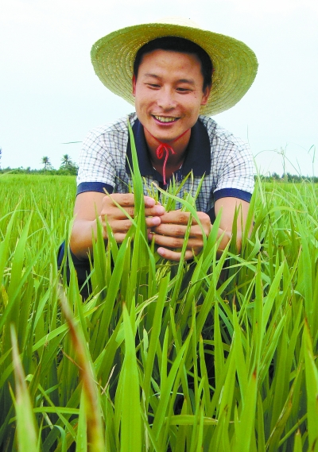

年轻育种人陈世建：培育优质水稻母本

陈世建 通讯员摄
5月8日，怀化市鹤城区石门乡塘底村一片绿油油的田地里，33岁的鹤城区农业技术推广中心农艺师陈世建蹲在自己的实验田边，仔细观察着精心培育的秧苗。这些长势不同的秧苗，是他培育3个省级审定优质水稻母本，经过不同的组合培育出来的。
“我主持研究的3个优质水稻母本，有望在今年底经过审定，明年将进行大面积农田推广。”从实验田种子到农民田间收获的希望，年轻的陈世建收获着人生的累累硕果。
2000年，陈世建从安江农校毕业后，被分配到鹤城区盈口乡农技站，开始农田研究工作。与许多年轻人不一样，性格内向沉稳的他，酷爱枯燥而严谨的科研工作。从那年起，他就有了自己的科研方向，下决心培育出高产高抗的优质水稻母本。
育种工作比农民种田还要苦，一年到头顶风沐雨，蹲在田间地头。秋冬时节，陈世建还要蹲守在海南三亚的试验田里，一呆就是五六个月。
比辛苦更为磨人的便是母本的不停培育，不断优化，一个优质成熟的母本不是一两年就能培育出，而是要耗费长达7年以上的时间。
2008年，陈世建主持育成了奥富A，并于2011年5月通过了省农作物品种审定委员会的审定。审定评语上写道：奥富A集高产、稳产、优质（综合米质指标达国标二级优质米）、抗病于一体，推广应用前景广阔。
此后，他又先后主持育成黔丰103A、六福A，均通过审定，取得了审定编号。“有了审定编号，我育出的母本有了‘身份证’，就有了农田推广的资格。”陈世建自豪地说。
近6年来，陈世建先后在湖南奥谱隆种业公司和鹤城区农业技术推广中心，通过科研团队主持育成或参与选育出12个已通过审定的新品种，带来了巨大的经济效益与社会效益。其中，他参与研究的国审早稻T优15，近3年在湖南、湖北等5省推广面积490.5万亩，新增粮食2.19亿公斤，农民新增纯收入3.618亿元；国审优质晚籼品种奥两优28，近3年在湖南、江西等5省推广面积330.75万亩，新增粮食1.233亿公斤，农民新增纯收入6.726亿元。
(文章来源：湖南日报，作者：记者 沙兆华)